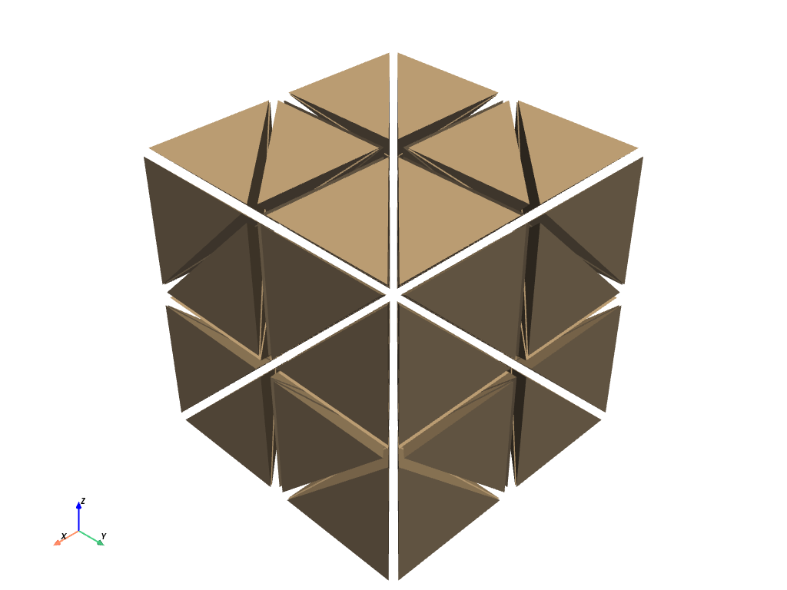

download_tetrahedron#
- download_tetrahedron(load=True)[source]#
Download tetrahedron dataset.
- Parameters
- loadbool,
optional Load the dataset after downloading it when
True. Set this toFalseand only the filename will be returned.
- loadbool,
- Returns
pyvista.UnstructuredGridorstrDataSet or filename depending on
load.
Examples
Shrink and plot the dataset to show it is composed of several tetrahedrons.
>>> from pyvista import examples >>> dataset = examples.download_tetrahedron() >>> dataset.shrink(0.85).plot()
